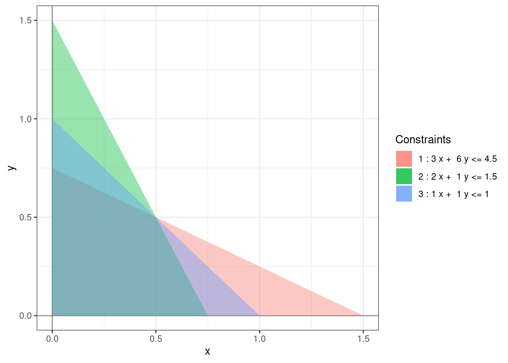

Chapter 5 Halting problem
We now have a complete algorithm for solving a standard linear program. However, we have not shown that it always finds the optimal solution. Let us start with the existence of optimal solution.
5.1 Fundamental theorem of linear programming
To resolve the issue of getting stuck in a loop, we first need the following theorem about linear programs:
Theorem 5.1 (Fundamental theorem of linear programming) Every standard linear program is exactly one of the following:
- Infeasible,
- Unbounded,
- Has an optimal solution. In this case, the optimal solution is obtained at one of the vertices of the feasible region.
This theorem is an easy corollary of the extreme value theorem for multi-variate functions and relies on the closedness of the feasible region of a standard linear program and the continuity of the objective function.
We see that the simplex method is able to detect all three cases. The first case happens when the Phase I algorithm is unable to find a feasible solution, the second case happens when no leaving variable is found, and the third case happens when no entering variable is found.
However, it is possible for the simplex method to get stuck in a loop. This is called cycling. One way to show that the simplex method does not cycle is to show that the objective value always increases after the simplex step. If this were the case then we would never visit the same vertex twice. The vertices of the feasible region are obtained by intersecting constraint boundaries and hence only are finite in number (even if the region is unbounded). So, if we never visit the same vertex twice, the simplex method must halt.
However, it is not always the case that the objective value increases after a simplex step!
5.2 Degeneracy
We saw in Section 3.3.2 that after the simplex step the entering and leaving variable gets updated as follows: \[\begin{align} x_j & \mapsto b_i/a_{ij} \\ w_i & \mapsto 0. \end{align}\] This increases the value of the objective function by \(c_j b_i/a_{ij}\). Because of the criterion for choosing the entering and leaving variables, the constants \(c_i\) and \(a_{ij}\) are always positive. We know that \(b_i\) this is the value of the basic variable \(w_i\) and hence must be \(\ge 0\). But we cannot guarantee that \(b_i > 0\). If \(b_i = 0\), then the objective value does not increase after the simplex step. This can result in the simplex method to get stuck in a loop.
We say that the dictionary at a feasible vertex is degenerate if some \(b_i = 0\). In this case, one of the basic variables also has the value 0 at this vertex. Geometrically, this is saying that more than \(n\) constraints are satisfied at this vertex.
Example 5.1 The following slight modification of Example (1.2) is a degenerate linear program:
\[\begin{equation} \begin{array}{rrrrrl} \mbox{maximize:} & 4x & + & 3y \\ \mbox{subject to:} & 3x & + & 6y & \le & 4.5 \\ & 2x & + & y & \le & 1.5 \\ & x & + & y & \le & 1 \\ & x & , & y & \ge & 0. \end{array} \end{equation}\]

At the optimal solution, \((0.5, 0.5)\) all three constraints are met. At this vertex, one of the rows is \[\begin{align} w_3 &= 0 + 0.33 w_2 + 0.11 w_1. \end{align}\]
Example 5.2 Consider the following degenerate linear program:
\[\begin{equation} \begin{array}{rrrrrrrl} \mbox{maximize:} & x_1 & - & 2x_2 & & & - & 2x_4 \\ \mbox{subject to:} & 0.5 x_1 & - & 3.5x_2 & - & 2x_3 & + & 4 x_4 & \le & 0 \\ & 0.5 x_1 & - & x_2 & - & 0.5 x_3 & + & 0.5 x_4 & \le & 0 \\ & x_1 & & & & & & & \le & 1 \\ & x_1 & , & x_2 & , & x_3 & , & x_4 & \ge & 0 \\ \end{array} \end{equation}\]
The following is a valid sequence of simplex steps:
- \(x_1\) enters and \(w_1\) leaves,
- \(x_2\) enters and \(w_2\) leaves,
- \(x_3\) enters and \(x_1\) leaves,
- \(x_4\) enters and \(x_2\) leaves,
- \(w_1\) enters and \(x_3\) leaves,
- \(w_2\) enters and \(x_4\) leaves.
At the end of the \(6^{th}\) simplex step, we end up looping back to the origin.
5.3 Bland’s rule
There are various ways of dealing with cycling. The simplex way is to remember all the simplex steps taken so far and if we happen to revisit a vertex then we simple make a different choice of entering and leaving variables.
However, as it turns out, there is a much simpler way to avoid cycling by using Bland’s rule. Bland’s rule says that if there are multiple candidates for the entering/variable then we choose the one with the smallest index. (We assume that the decision variables have a smaller index than the slack variables.)
Theorem 5.2 (Bland's rule) The simplex method always terminates provided that both the entering and the leaving variable are chosen according to Bland’s rule.
The proof of this theorem is too complicated for this course. With this modification, for both Phase I and Phase II of the simplex method, we now have a complete algorithm for solving linear programs.